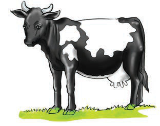
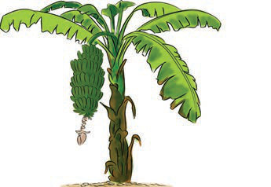
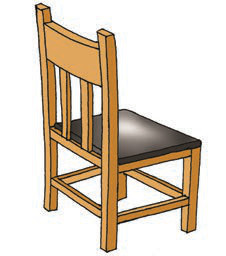
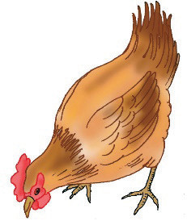
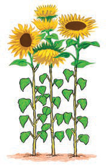

Living things are divided into two main groups. These groups are animals and plants. Animals include human being, cattle, giraffe, dog, fish, grasshopper, bees, cockroach, chicken, eagle and ostrich. Plants include trees, flowers and grasses.
Exercise 2
Observe the following pictures or listen to their descriptions, then answer the questions that follow:

(a)
A black-and-white cow standing on grass.

(b)
A banana plant with a bunch of green bananas.

(c)
A small radio with an antenna.

(d)
A wooden chair.

(e)
A brown chicken pecking the ground.

(f)
Tall sunflower plants with big yellow flowers.